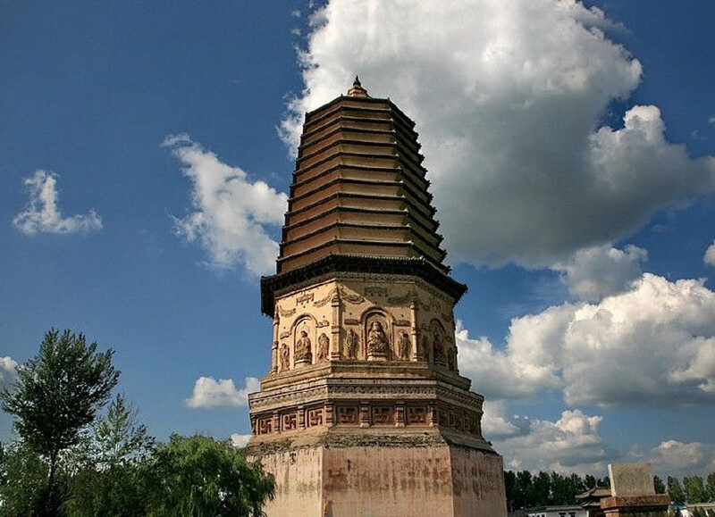
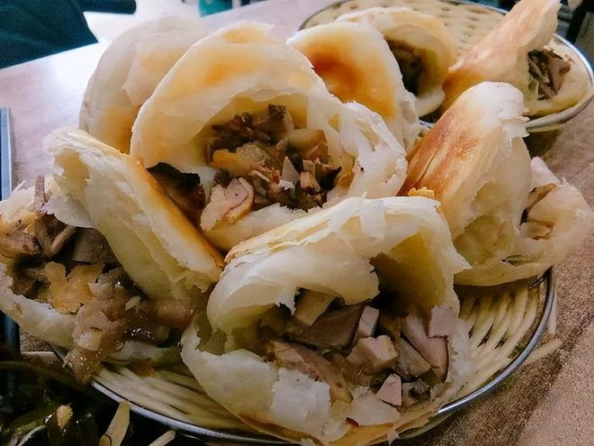
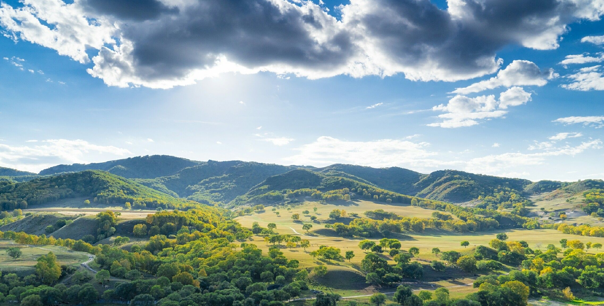
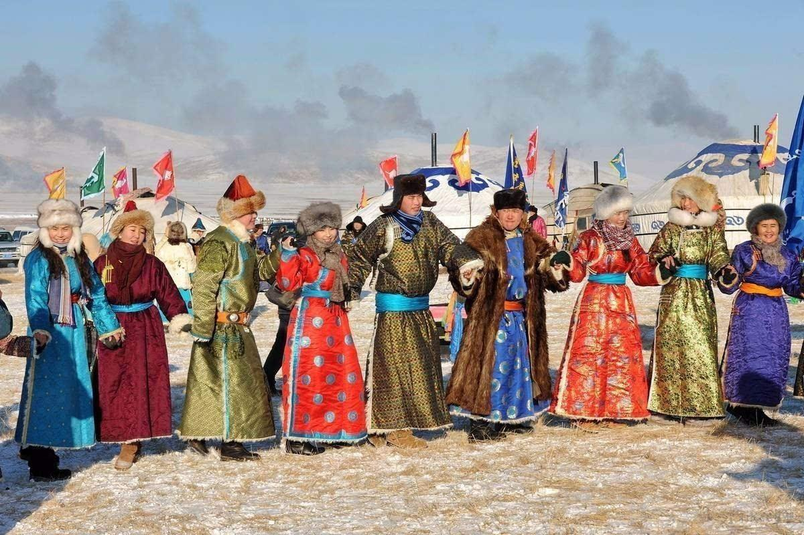

Hongshan Culture is one of the most famous historical and cultural heritages in Chifeng, with a history of more than 5,000 years. Hongshan Culture is famous for its exquisite jadeware and unique sacrificial culture, and it is an important cultural representative of the Neolithic Age in northern China.
Located in Hongshan District, Chifeng City, Hongshan National Forest Park is an important birthplace of Hongshan Culture. It preserves a large number of historical relics and cultural landscapes, attracting many archaeologists and tourists to explore.

Chifeng's cuisine combines Mongolian and Han cooking characteristics, mainly featuring meat and dairy products. The most famous ones include hand-held meat, roasted whole lamb, milk tofu, milk tea and other traditional Mongolian foods.
Chifeng's mutton is famous for its tender meat and unique taste, especially the sheep raised on the grassland, which have more delicious meat. In addition, Chifeng's buckwheat noodles, duijia and other special snacks are also worth trying.

Chifeng has rich natural landscapes, from vast grasslands to spectacular deserts, from beautiful lakes to majestic mountains. The most famous ones include Wulanbutong Grassland, Dalinor Lake, and Asht Stone Forest in Hexigten Banner.
Wulanbutong Grassland is the filming location of the TV series "Huanzhu Gege". The grassland scenery here is beautiful, with green grass in summer and colorful forests in autumn, making it a paradise for photographers.

Chifeng's local festivals are rich and colorful, among which the most famous ones are traditional Mongolian festivals such as Nadam Fair and Aobao Sacrifice. Nadam Fair is the largest traditional festival of the Mongolian people, usually held in July and August every year, during which there are traditional sports events such as horse racing, wrestling, and archery.
In addition, Chifeng also has some local special festivals, such as Hongshan Culture Festival and Grassland Tourism Festival. These festivals not only showcase Chifeng's cultural characteristics but also provide tourists with opportunities to understand local folk customs.